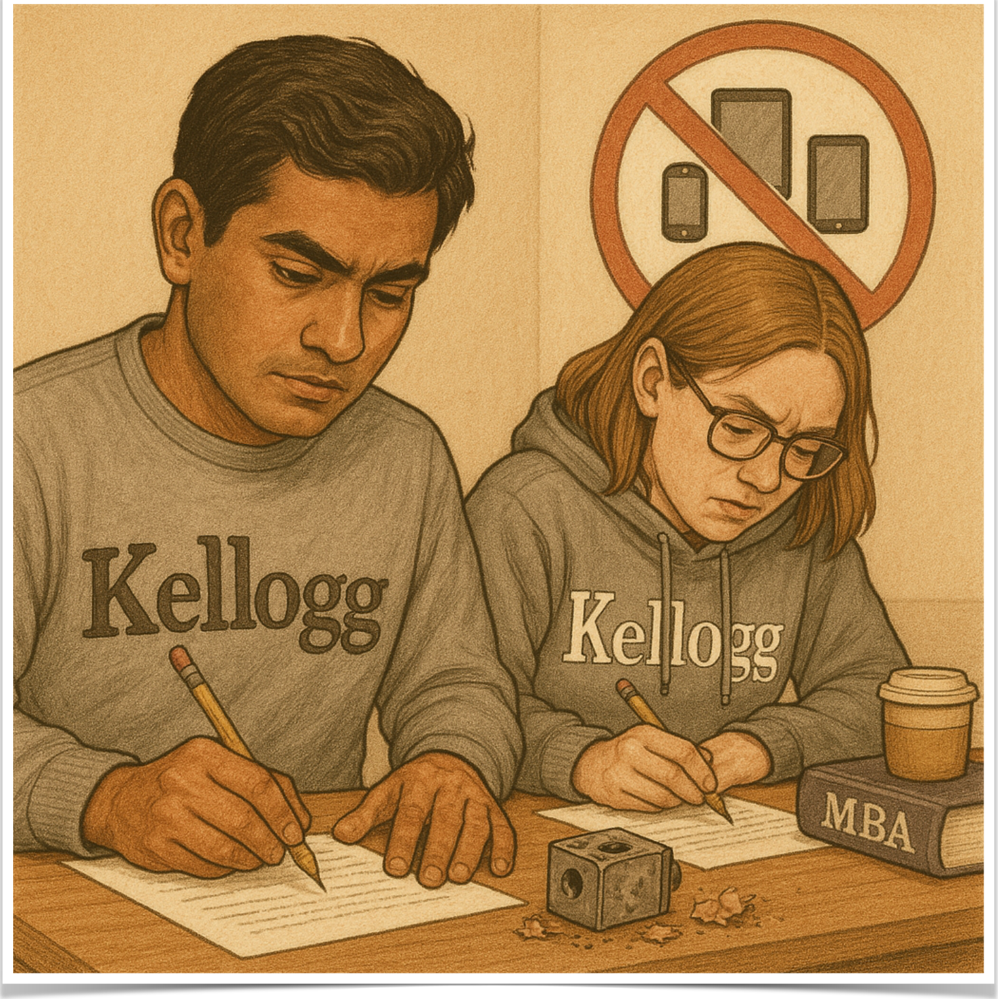
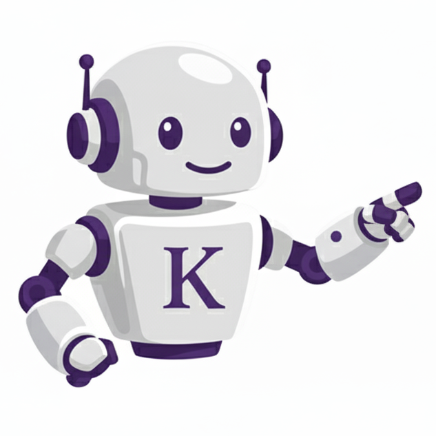
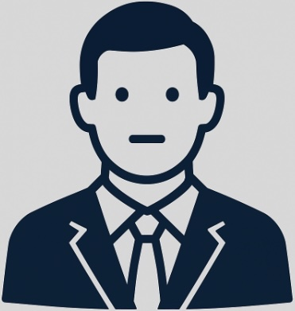
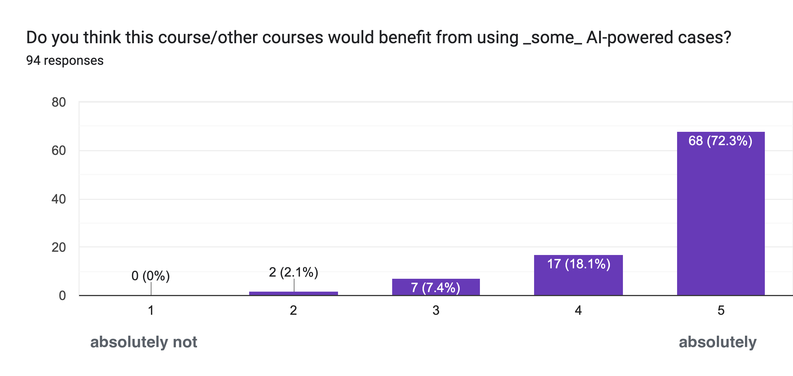
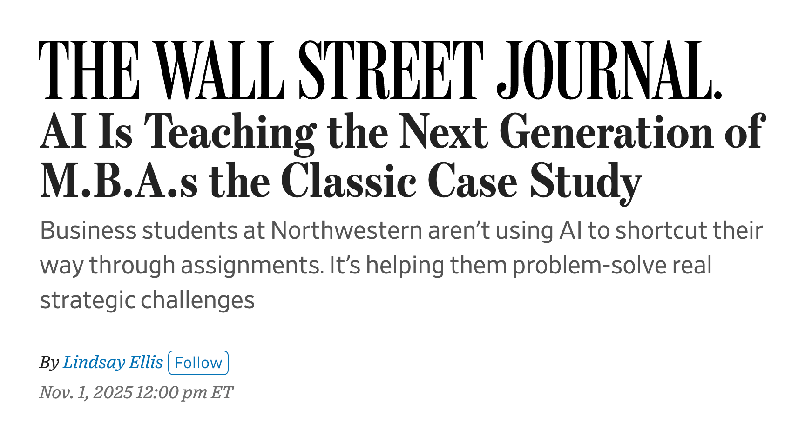
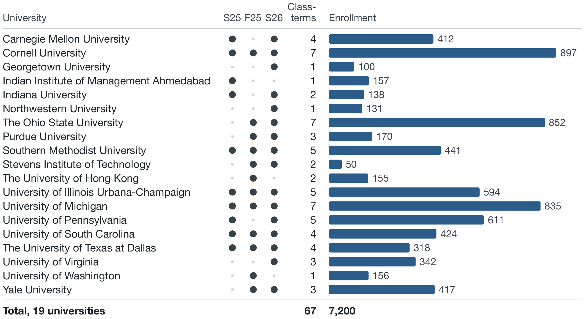
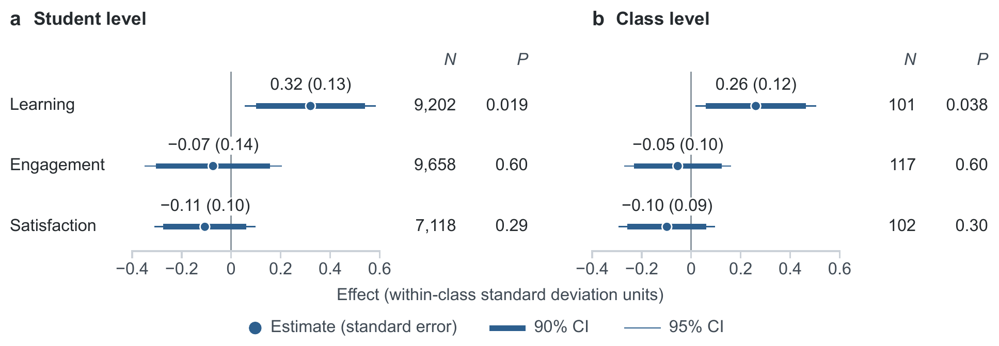
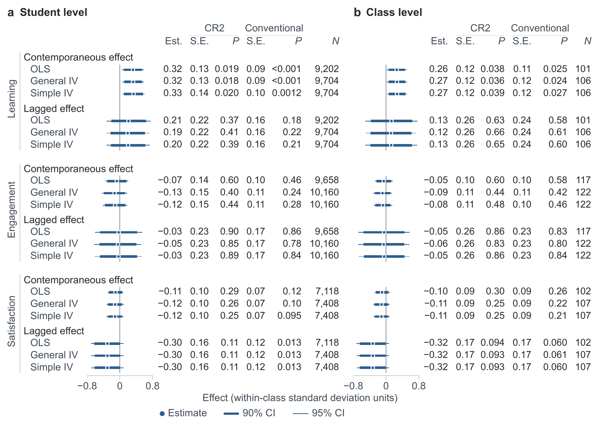
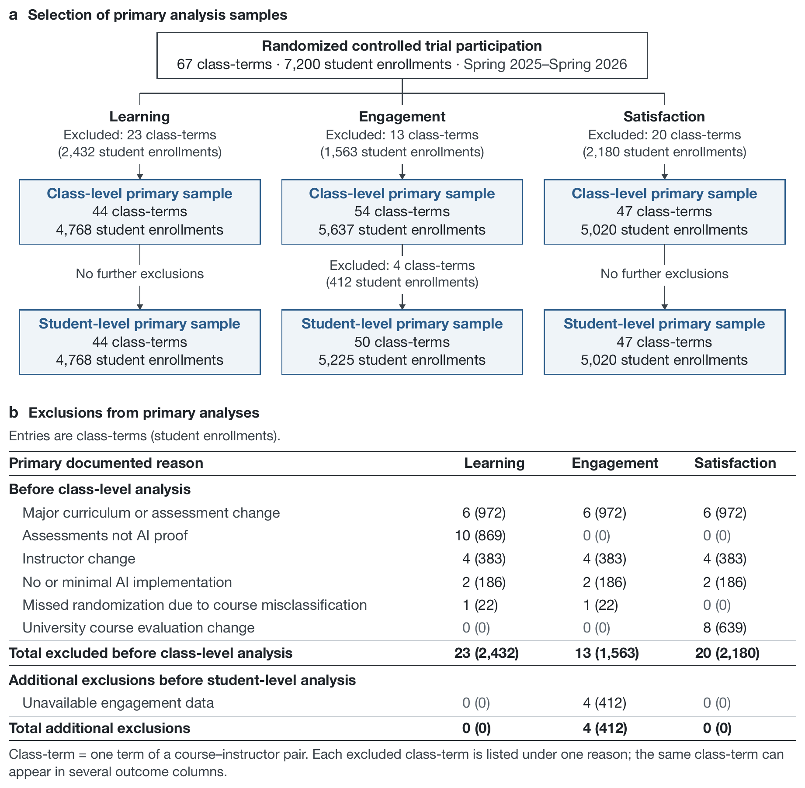

Northwestern|Kellogg
Teaching with AI
My experience leveraging AI for teaching in the last three years & RCT results across 19 universities
Sébastien MartinAssociate Professor of Operations · Northwestern Kellogg
Chicago Booth · November 16, 2026
Chicago Booth · November 16, 2026
Introduction
How I relate to AI
Research
- Reinforcement learning
- AI & optimization
- Robotaxis (Waymo)
- AI in education
- Long-term AI memory
Teaching
- AI Foundations for Managers
- Leveraging AI in education at Kellogg
Industry
- Board member, NYSE: ESAB, focusing on AI strategy
Introduction
Key questions for AI in education
What should we teach?
How should we teach?
Introduction
Damage control, or fighting fire with fire?


Introduction
For today
Part 1
Showcase
Showcase
Teaching with an AI TA
AI case studies
Instructor empowerment
Teaching AI
Part 2
Research
Research
Does it work? A large experiment
Teaching with an AI TA
Teaching with an AI TA
Live demo
Kai, Kellogg’s AI teaching assistant

Our teaching assistant
- For students’ questions about the course
- For interactive homework
- In my classes since 2024
Teaching with an AI TA
Some thoughts
The right incentive systems
The instructor in control
The contract with your students
Creativity
Teaching with an AI TA
Live demo
AI evaluation and grading
Teaching with an AI TA
How to grade with AI?
Arnaudo, Bennouna & Martin. Interpretable Feature Discovery from Unstructured Data Using LLMs and Statistical Choice Models. Under review at ICLR 2027. arXiv 2610.38082.
AI case studies
AI case studies
Traditional cases, in the age of AI
One document for everyone
- Static, the same for every student.
- Hard to adapt: identical information for every student and every professor.
- Hard to resist just asking ChatGPT to read it for you.
- Richer cases with software or simulations are a costly, heavy lift.
AI case studies
What if students could interact with the characters of the case?
An immersive, adaptive simulation, powered by AI, instead of a static PDF.
AI case studies
Live demo
Transportation Crisis at the Boston Metro School District
Superintendent

CFO
COO
Principal
Bus driver
My final Operations case, on NoYes AI: students interview five characters.
AI case studies
Students want more AI cases

Kellogg end-of-course survey, 94 responses. 72% gave the top rating; none gave the lowest.
AI case studies
Student testimonies
“It felt more realistic. I worked in consulting before, and it really felt like the first days of a project, interviewing clients, gathering insights. It was more engaging too.”
“The AI case gave me the taste of real projects where I need to structure my thinking and apply what I learned to ask useful questions.”
“I liked that it incorporated the real-life element of conflicting perspectives and priorities, and that it was based on a real case (Boston public schools).”
“Accessible anytime, and easy to talk to.”
AI case studies
Want to try it yourself?

BloombergBusinessweek
AI Is Changing the Business School Case Study
The WSJ article links to a live AI case anyone can open. Both links are on the page at the end.
Instructor empowerment
Live demo
What’s changing with the latest AI technologies
ChatGPT
OpenAI
Claude
Anthropic
Gemini
Google

Claude Code & Cowork
Anthropic

Codex & Work
OpenAI
OpenClaw
Open source
Hermes
Nous Research
Muse
Meta
Dots
OpenAI
Instinct
Startup
🧞
At this point, think about AI as a genie.
What I learned
Why I’m optimistic about AI in education
“Fighting fire with fire”
More work from the human staff!
Increasing my ability to connect with students
The benefits of personalization
5% AI expertise, 95% instructor expertise
The instructor’s imagination is the limit!
What I learned
My experience with AI
Four years in, the one thing that predicts success: how involved the instructor is.
Teaching AI
Teaching AI
AI Foundations for Managers: AgentOps
MBA elective · five weeks · no prerequisites
Build from day one
→
How generative AI works
→
Agents and the frontier
→
AgentOps
Evaluate, deploy, manage change
Project: an AI agent for a business problem you know
Teaching AI
An AI workflow is an operations problem

Who decides, who reviews, and how do we know it works?
Instructor-designed AI improves learning in a randomized trial across 19 universities
with Jun Li, Robert Bray, Nils Van den Steen and Andrew Wu
and Xiao Ni, Arielle Anderer, Ekaterina Astashkina, Volodymyr O. Babich, Jean-Paul Baldwin, Hamsa Bastani, Christian Blanco, Oguzhan Celebi, Christopher Chen, Shi Chen, Benjamin Collier, Yao Cui, Pnina Feldman, Blair Flicker, Brian Han, Yichun Hu, Daniela Hurtado-Lange, Jane Jiang, Zhaohui Jiang, Ismail Kirci, Murat Köksalan, Zhen Lian, Hongyan Liang, Mengshi Lu, Lesley Meng, Ken Moon, Mi Kyong Newsom, Minje Park, Chris Parker, Anyan Qi, Meng Qi, Debjit Roy, Neha Sharma, Alp Sungu, Tom Tan, Necati Tereyagoglu, Hanu Tyagi, Sriram Venkataraman, Guihua Wang, Yixin Wang, Owen Wu, Zonghao Yang, Qiuping Yu, Sophie Yu, Jingwei Zhang, Wenchang Zhang and Ruihao Zhu
arXiv:2611.19099 · Submitted to Nature
The AI RCT
What do we know about AI in education?
Earlier trials
Students receive a generic chatbot, or one AI tool designed centrally.
→ Students learned less
Bastani et al. 2025 · Fan et al. 2025 · Liu et al. 2026
Our question
What if each instructor designs the AI for their own class?
→ Does learning improve?
The AI RCT
Our overall design
Join
Recruited by a lead at each university
→
IRB
Ethics approval at every university
→
AI plan
Plus three measures: learning, engagement, satisfaction
→
Randomize
Within groups of similar classes
→
Teach
Treatment:
AI now
AI now
Control:
AI next time
AI next time
→
Measure
Exams, engagement, course evaluations
→
Listen
Student surveys, instructor interviews
For everyone, all along
Training and tools: regular Zoom meetings · a yearly in-person workshop · Faculty Twin, an AI platform co-developed with Google
↻ Rolling entry: a new cohort each term, spring 2025 to spring 2026
The AI RCT
What is randomized: when the class starts
Earlier termssame course, same instructor
Experimental termrandomized
Next time taughtevery control instructor implemented
Treatment classstarts now
No AI from the instructor
The instructor’s AI
AI continues
Control classwaits one term
No AI from the instructor
Taught as before
The instructor’s AI
Effect =
treatment: this term vs. its own past
−
control: this term vs. its own past
The AI RCT
A unique treatment: each instructor designs the AI for their own class
Not one tool handed to every student. Training and tools are provided to all.
The AI RCT
The consortium: 19 universities, 55 classes

19
universities
42
instructors
55
classesone course, one instructor
7,200
student enrollments
The AI RCT
What instructors built: 33 tools, 7 functions
Course navigation
25
A concierge for the syllabus, deadlines and course policies
Socratic coaching
19
A practice-problem tutor that withholds the final answer
Study tutoring
18
A practice-exam generator with new real-world scenarios
Stakeholder role-play
8
A skeptical investment analyst who challenges the student’s model
Simulation
8
A negotiation game against an AI counterpart
Reflection
6
A career mentor that ties the course to each student’s goals
AI literacy
5
An error hunt: compare the agent’s work with your own reasoning
One square = one of the 30 treated classes using AI for this function.The average class combines 3.0 functions.
The AI RCT
Who is in the analysis
To join
- Has taught the course before
- Has not built AI into it yet
- No other major change planned
Not pre-registered
- The AI-proof exam filter
- The class-level analysis
- OLS: the pre-registered estimators give the same answer
67 class-terms in the trial
44 in the learning analysis4,768 student enrollments
10 dropped: the exam was not AI-proofonly proctored, in-person exams count
13 dropped for other reasonscourse or assessment changed (6), instructor changed (4), no AI implemented (2), not randomized by mistake (1)
The AI RCT
Learning went up by 0.32 standard deviations

A statistically significant increase in exam scores, on proctored, in-person exams.Student level: the students who agreed to share their data. Class level: every enrolled student, from class averages.
The AI RCT
What students and instructors told us
Students
What they liked about the AI · 1,414 open answers
49%Practice and exam preparation
33%Help understanding
23%Tailored to the course
“It allowed me to have endless problems.”A student, end-of-course survey
Instructors
What happened in the classroom · 25 interviews
76%Useful in practice
52%Uneven use across students
36%Prompts needed tuning
“Students don’t use it unless you give bonus points or tie it to a particular class requirement.”Professor 3
The AI RCT
Takeaway: put the instructor in charge
AI improved learning when each instructor designed it for their own classroom.
What we cannot say yet
- Whether it holds beyond applied STEM
- Whether the gain lasts
- Which designs work best
The AI RCT
We are growing. Join us!
Send me an email if you want to take part: sebastien.martin@kellogg.northwestern.edu
Thank you
The slides, Kai, and all the links:
sebastienmartin.info/p/booth.html
The AI RCT
Backup
All specifications

The AI RCT
Backup
Sample flowchart
